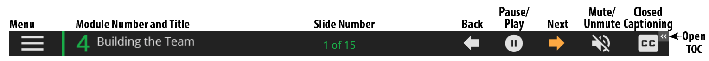
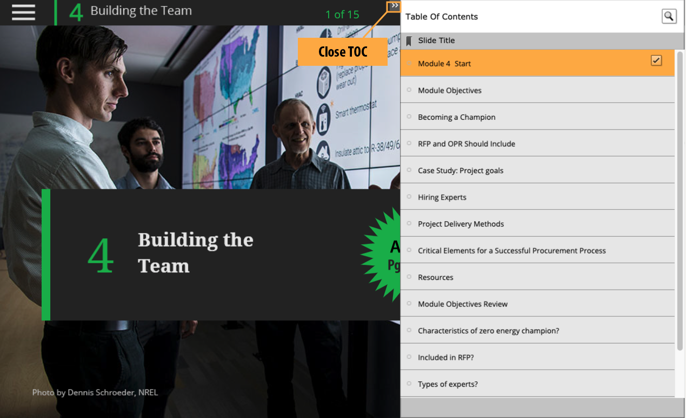
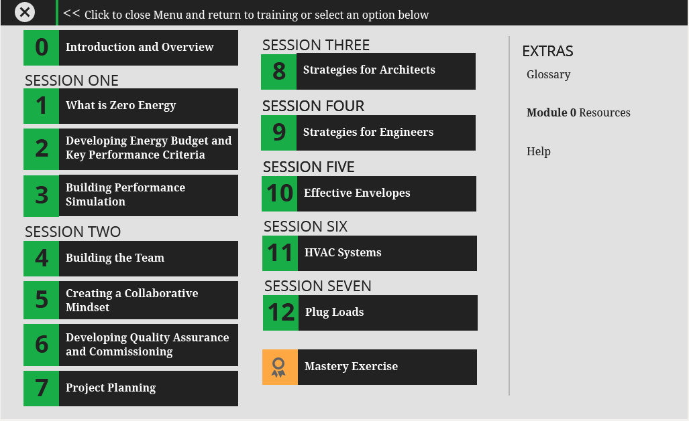

Help Guide for Achieving Zero Energy Building Design: Based on Advanced Energy Design Guide for K-12 School Buildings
Top Bar Buttons and Keyboard Shortcuts
- Menu: Takes you to the menu for the course and you can access other modules, help, and the glossary
- Keyboard shortcut: Option-Shift-M
- Back or Previous: Returns you to the previous slide within a module
- Keyboard shortcut: Left arrow
- Pause: Will pause the slide and the main slide audio.
- Keyboard shortcut: Down arrow
- Play: Will resume the playing and audio for the slide.
- Keyboard shortcut: Up arrow
- Mute: Will silence the audio.
- Keyboard shortcut: Option-Shift- -
- Audio On: Will turn off the mute.
- Keyboard shortcut: Option-Shift- =
- Closed Captioning: Will toggle on and off the closed captioning.
- Turn on closed captioning with keyboard shortcut: c
- Turn off closed captioning with keyboard shortcut: x
- The small left pointing double arrows in the right upper corner will open the Table of Contents (TOC) for the current module


Menu
- Close menu: Will return you to the last slide you were on in the module.
- Keyboard shortcut: Left arrow
- To go to a module select the number or title of the module
- Module 00 Keyboard shortcut: 0
- Module 01 Keyboard shortcut: 1
- Module 02 Keyboard shortcut: 2
- Module 03 Keyboard shortcut: 3
- Module 04 Keyboard shortcut: 4
- Module 05 Keyboard shortcut: 5
- Module 06 Keyboard shortcut: 6
- Module 07 Keyboard shortcut: 7
- Module 08 Keyboard shortcut: 8
- Module 09 Keyboard shortcut: 9
- Module 10 Keyboard shortcut: Option-0
- Module 11 Keyboard shortcut: Option-1
- Module 12 Keyboard shortcut: Option-2
- Mastery Exercise Keyboard shortcut: Option-3
- Glossary: Opens a new browser window with a glossary
- Keyboard shortcut: Option-g
- Module Resources: Goes back to the resources slide in current module
- Keyboard shortcut: Option-r
- Help: Opens the help menu in a new browser window
- Keyboard shortcut: Option-h

Submit and Reset
- Submit: Will enter your answer.
- Keyboard shortcut: Option-S
- Reset: Will clear your answer so you can try again.
- Keyboard shortcut: Option-R